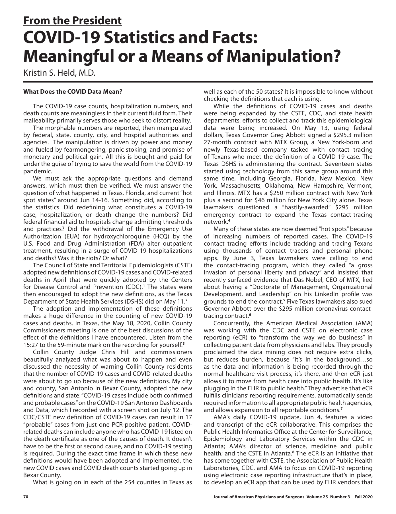
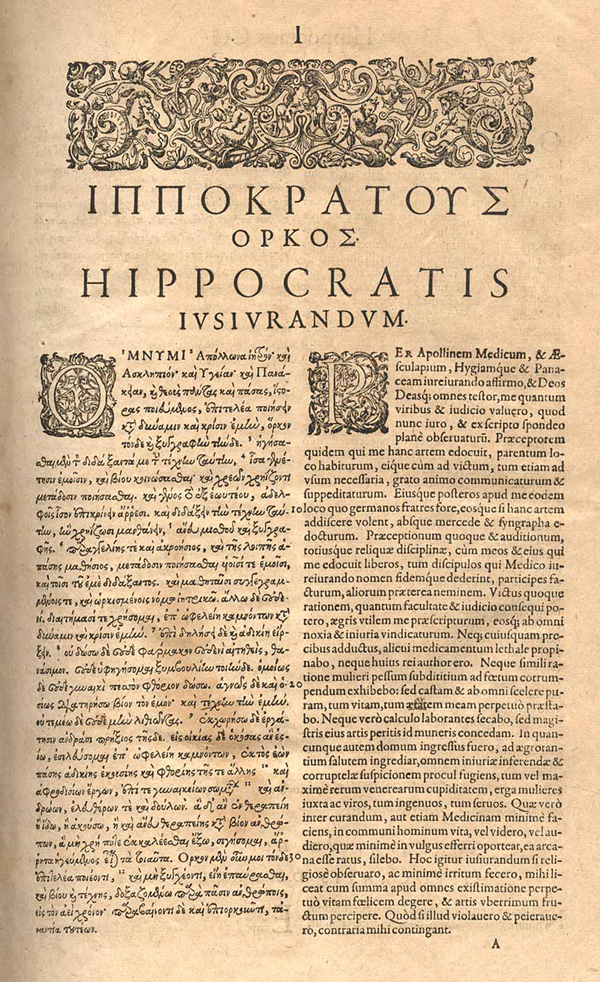
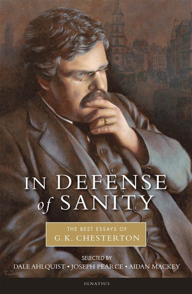

1:16:03 · 12 OPERE
Il governatore della California rimane in carica.
Il filo del discorso
Il mancato richiamo di Gavin Newsom dalla carica di governatore della California diventa il punto di partenza per una riflessione polemica sul consenso, sull’autorità degli esperti e sulla possibilità di dissentire. Il quadro temporale è quello del settembre 2021: il relatore commenta il voto californiano e guarda alle imminenti elezioni tedesche del 26 settembre. Il procedimento californiano va distinto da una rielezione ordinaria: gli elettori dovevano decidere se rimuovere il governatore e, in caso affermativo, indicare un sostituto. Il risultato definitivo certificato fu del 61,9% contro la rimozione e del 38,1% a favore. Dr Divago interpreta il risultato come una sconfitta della capacità critica; le espressioni sulla salute mentale dell’elettorato e dei dirigenti politici sono invettive, non diagnosi. Una citazione di Isaia sul rovesciamento del bene e del male fornisce la cornice dell’intero intervento. Dr Divago attribuisce ai mezzi di comunicazione la capacità di presentare restrizioni, obblighi e conflitti come strumenti di protezione. Alla critica delle istituzioni affianca quella di una cultura che, a suo giudizio, scambia i certificati per contributi alla conoscenza. Le considerazioni sull’Italia, l’esilio di Dante, la produzione accademica e il prestigio dei Nobel concorrono a questa contrapposizione fra riconoscimento istituzionale e ragionamento autonomo. Il valore di un risultato scientifico, tuttavia, non è deciso dal confronto fra titoli professionali o premi: richiede esame delle prove e del metodo. La digressione geopolitica riguarda il patto AUKUS e la crisi diplomatica con la Francia. Il relatore legge la disputa come esempio del peso di interessi commerciali e strategie di potenza, collegandola alla Cina, alla Norvegia e al ritiro dall’Afghanistan. Alcune distinzioni tecniche sono necessarie: il progetto AUKUS annunciato nel 2021 riguardava sottomarini a propulsione nucleare, non dotati di armi nucleari; i B-1B schierati in Norvegia erano bombardieri convenzionali. Il richiamo francese degli ambasciatori era per consultazioni, non una rottura delle relazioni diplomatiche. La conclusione che ogni evento risponda a un unico disegno intenzionale appartiene all’interpretazione del relatore e non è dimostrata dall’accostamento delle notizie. Nel nucleo dedicato alla comunicazione sanitaria vengono presentati due testi identificabili. Il primo è l’editoriale di Kristin S. Held sulle statistiche COVID, pubblicato nell’autunno 2020 nel Journal of American Physicians and Surgeons; il nome reso diversamente dalla trascrizione automatica viene corretto attraverso l’originale. Il secondo è il saggio di John P. A. Ioannidis sulle norme della scienza, uscito su Tablet il 9 settembre 2021. Sono documenti distinti e non prove cliniche intercambiabili: il primo sostiene una critica politica delle definizioni e dei conteggi, il secondo discute trasparenza, scetticismo e disinteresse nella ricerca. Ioannidis riconosce esplicitamente la gravità della pandemia; la sua critica non dimostra l’inesistenza della malattia. Le ipotesi di catastrofi vaccinali future rimangono speculazioni del relatore: le segnalazioni di sospetti eventi avversi non equivalgono automaticamente a nessi causali e l’autorizzazione condizionata non coincide con assenza di valutazione regolatoria. Il tema del dissenso si sviluppa poi attraverso commenti ai media, alla stigmatizzazione sociale e a episodi non tutti identificabili con precisione. Dr Divago propone per chi comunica un criterio etico: offrire materiali e argomenti, rispettando la capacità di giudizio di chi ascolta. Richiama il Giuramento di Ippocrate, evoca 1984 e contrappone la raccolta chestertoniana In Defense of Sanity alla difesa della società aperta di George Soros. La polemica contro Popper e Soros, compresi i racconti di incontri personali, resta una valutazione dell’oratore; dal titolo di un libro del 2019 non si può inferire una tesi sui lockdown successivi. Le interpretazioni del tono del papa, le accuse relative a una persona deceduta e le letture delle intenzioni dei miliardari non vengono convertite in fatti clinici, giudiziari o psicologici accertati. La conclusione sposta il discorso dalle notizie al terzo capitolo di Daniele. Anania, Misaele e Azaria rifiutano di adorare la statua imposta da Nabucodonosor anche senza subordinare la fedeltà alla certezza di essere salvati. Dr Divago legge la fornace come figura della resistenza a un comando considerato ingiusto, accostandovi una scena dei Predatori dell’arca perduta. Il racconto biblico e il richiamo cinematografico sono distinti dalla cronaca e dalle indicazioni sanitarie: il punto filosofico conclusivo è, per il relatore, la fedeltà a un criterio di verità che non dipenda dal favore del potere.
I libri nel discorso

Isaia
Copertina del volume completo: San Paolo, 2014 · Nuova Versione dai Testi Antichi · edizione di riferimento
Isaia è un libro della Bibbia. L’immagine mostra il volume completo di riferimento San Paolo, non un’edizione autonoma di Isaia né una versione identificata nella citazione.
Riferimento ricavato dalla trascrizione automatica.
Passaggio 0:24 ↗ · Fonti e libro ↗
Costituzione degli Stati Uniti d’America
Copertina della raccolta: Testo firmato il17settembre1787. Per l’immagine si usa la raccolta Penguin Classics The Federalist Papers, ISBN 9780140444957, che dichiara di includere il testo della Costituzione; non è una fotografia della pergamena originaria.
Copertina autentica di The Federalist Papers: la descrizione editoriale attesta che la raccolta comprende il testo completo della Costituzione. Non è il frontespizio costituzionale del 1787 e Hamilton, Madison e Jay non sono presentati come unici autori del documento.
Riferimento ricavato dalla trascrizione automatica.
Passaggio 5:38 ↗ · Fonti e libro ↗
COVID-19 Statistics and Facts: Meaningful or a Means of Manipulation?
Identificazione probabile
Copertina: Journal of American Physicians and Surgeons 25.3, Fall 2020, prima pagina p.70
Pagina 70 del documento ufficiale, con titolo, autrice, rubrica From the President, rivista e data. È la prima pagina dell’editoriale di tre pagine, non una copertina o un trial clinico.
Riferimento ricavato dalla trascrizione automatica.
Passaggio 23:48 ↗ · Fonti e libro ↗How the Pandemic Is Changing the Norms of Science
Identificazione probabile
Copertina: Tablet, 9 settembre 2021, fotografia editoriale di apertura
Fotografia autentica associata dall’editore esattamente a questo articolo: una passante davanti a un murale raffigurante Anthony Fauci. Credito originale Timothy A. Cleary/AFP via Getty Images conservato. È un’illustrazione editoriale del saggio, non un facsimile del suo testo, una copertina o un ritratto di Ioannidis.
Riferimento ricavato dalla trascrizione automatica.
Passaggio 30:45 ↗ · Fonti e libro ↗
Giuramento di Ippocrate (Hórkos)
Copertina: Ippocrate · Opera omnia · Francoforte, eredi di Andreas Wechel,1595 · pagina del Giuramento in greco e latino
Pagina originale intera del Giuramento, con titolo Hórkos/Hippocratis Iusiurandum e colonne greca e latina. Provenienza NLM 2251068R. Illustra il testo in una raccolta antica, non una copertina autonoma né un’edizione identificata nel video. Non è la sol’immagine di un busto di Ippocrate.
Riferimento ricavato dalla trascrizione automatica.
Passaggio 49:42 ↗ · Fonti e libro ↗
1984
Copertina: Newton Compton · edizione illustrativa
Riferimento ricavato dalla trascrizione automatica.
Passaggio 56:15 ↗ · Fonti e libro ↗
In Defense of Sanity: The Best Essays of G.K. Chesterton
Identificazione probabile
Copertina: Ignatius Press 2011, ISBN 9781586174897
Copertina ufficiale con ritratto di Chesterton, titolo e nomi dei tre curatori. Rappresenta la raccolta moderna The Best Essays of G.K. Chesterton, non un singolo saggio omonimo scritto dall’autore. Edizione non identificata visivamente nel filmato.
Riferimento ricavato dalla trascrizione automatica.
Passaggio 58:35 ↗ · Fonti e libro ↗
La società aperta e i suoi nemici
Identificazione probabile
Copertina: Armando Editore · Classici · 2018 · volume unico
Copertina autentica di riferimento, controllata visivamente. L’edizione non è identificata come quella usata nel video.
Riferimento ricavato dalla trascrizione automatica.
Passaggio 1:01:03 ↗ · Fonti e libro ↗In Defense of Open Society
Copertina: PublicAffairs 2019, ISBN 9781541736702
Copertina autentica della raccolta di scritti e interventi di George Soros, con fotografia in bianco e nero, autore arancione e titolo azzurro. L’anno 2026 nel percorso del server indica il caricamento dell’immagine, non l’anno bibliografico dell’opera.
Riferimento ricavato dalla trascrizione automatica.
Passaggio 1:03:36 ↗ · Fonti e libro ↗Bibbia
Copertina: San Paolo, 2014 · Nuova Versione dai Testi Antichi · edizione di riferimento
Riferimento ricavato dalla trascrizione automatica.
Passaggio 1:08:38 ↗ · Fonti e libro ↗Daniele (Libro di Daniele)
Copertina: La Bibbia, San Paolo 2014, ISBN 9788821593246, volume completo
Copertina della Bibbia completa, volume che comprende il libro di Daniele. Non è la copertina di un’edizione autonoma di Daniele e la versione non è attribuita al video.
Riferimento ricavato dalla trascrizione automatica.
Passaggio 1:09:06 ↗ · Fonti e libro ↗I predatori dell’arca perduta (Raiders of the Lost Ark)
Identificazione probabile
Copertina: Locandina cinematografica originale 1981, key art ufficiale Amblin
Locandina autentica di Raiders of the Lost Ark, con Harrison Ford e crediti del film; non una copertina libraria né un altro episodio di Indiana Jones. Il confronto con Daniele 3 appartiene al relatore e non prova una derivazione dichiarata dagli autori del film.
Riferimento ricavato dalla trascrizione automatica.
Passaggio 1:14:17 ↗ · Fonti e libro ↗